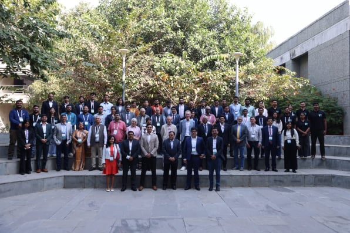

Integrating quantitative physical principles, computational modeling, geochemical analysis, and extensive field geology expeditions.
Designed for students with backgrounds in Geology, Geophysics, Physics, Chemistry, Civil, or Environmental Engineering.
A comprehensive program delivering deep knowledge in physical geology, structural geology, geochemistry, mineralogy, petrology, palaeontology, and remote sensing.
An advanced engineering and scientific degree focusing on hydro-climatic modeling, water resources management, structural hazards, and satellite remote sensing.
An intensive research program for highly motivated scholars to publish groundbreaking science in Earth processes, water security, geoarchaeology, and tectonics.
Fieldwork is at the heart of our curriculum. Students undertake immersive geological field mapping trips across the Kutch Basin, Deccan Volcanic Province, Aravalli Mountain Range, Himalayan thrust belts, and coastal Gujarat.
